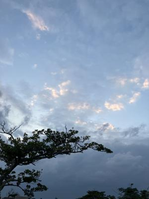
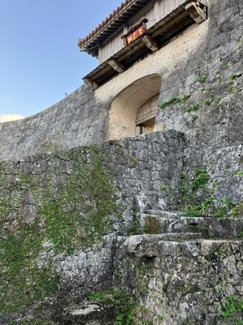
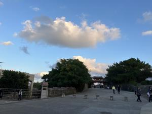
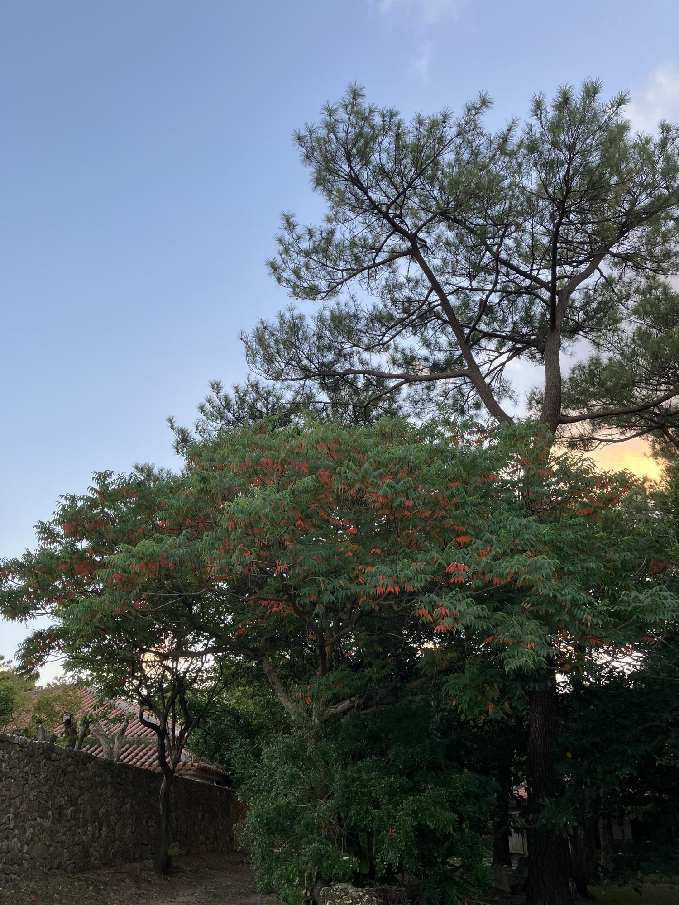

うるがいの話 ある日
最新: 首里城の湧水【うるがいの話 ある日】とは 一日だけのプログです
『うるがいの話』の最新一日だけのプログで、通信料が少なく経済的だ。カニの画像をクリックすると全ての日付が載る『うるがいの話』サイトを表示します
|
|
【うるがいの話】 うるがい(ｳﾙｶﾞｲ urugai)とは、『もずくがに』の名前でとても大きくなります。 |
|---|---|
|
|
【カミマヤーの話】 猫のことを方言でマヤーといいます。カミマヤー（kamimayaa）とは、神の猫のことです。 |
|
【たながぁの音楽】 たながぁ（ﾀﾅｶﾞｰ tanagaa）とは手長えびのことで、何種類かあり大きいのは車 エビぐらいになります。 |

|
【ぶながぁの話】 ぶながぁ(ﾌﾞﾅｶﾞｰ bunagaa)とは、赤い髪の毛、赤い身体、そして身長は１ｍ２０ｃｍ ぐらい、川の蟹を食べているの目撃された。場所は沖縄県国頭郡大宜味村のと ある村僕の隣近所に住んでいる爺さんから、聞いた話です。 |
|
|
【ギーマの話】 ギーマ(giima)とは、山原の里山に咲くスズランに似た、 花を付けます。実は食べられます、 気が付くと口の周りが紫になっています。 |
2023年12月01日 (金）首里城の湧水
14:51
  
１９７９年、部活をするため大学の正門から、バイクで体育館へ移動するとき
、いつも右手に湧水が道まで流れている場所があった。あれは、いまのどこな
のだろうか？と首里城公園へ久々にジョギングしたとき、確認した。『久慶門
（きゅうけいもん）門の左手に「寒水川樋川」（すんがーひーじゃー）と呼ば
れる湧水があります。城内に降った雨が地下浸透し、ここで湧き出しています
』、ん～、確かに久慶門だよなと納得する。４０数年も昔の話である、記憶も
曖昧になっていく。ハゼの木が、紅葉していた。小さい頃は、モミジと喜んで
いたが。

雨戸の張替えで、網戸固定用のゴム（新築３０年のものをそのまま再利用）を
網戸の枠の溝に埋め込む時に、全身の筋肉を使ったのだろう。足も含め、全身
筋肉痛である。もしかして、古いゴムが硬くなっていたかもとフと思った。
１４時５３分 ビットコインの総資産 ￥１６、３６３（↑１７４）